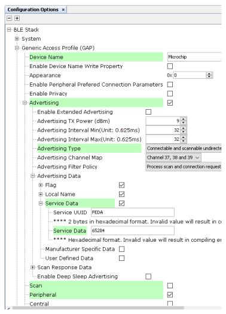
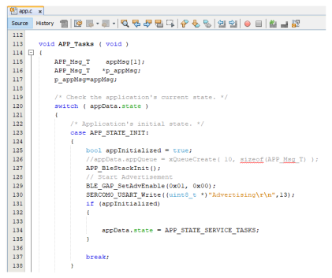
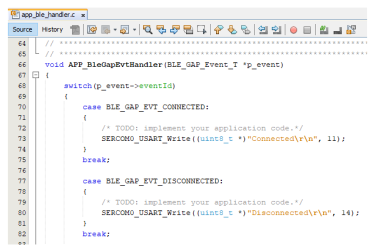

3.1.2.5 BLE Connection
Getting Started with Peripheral Building Blocks
Introduction
This document will help users enable advertisements and connection on WBZ451 Curiosity board using MPLAB Code Configurator(MCC) BLE Advertisement is Broadcasting of small packets to peer devices. In BLE, a peripheral device always starts with advertisements. Advertisement packets enable a central or observer to discover and connect to a peripheral.
Users can choose to just run the precompiled Application Example hex file on the WBZ451 Curiosity Board and experience the demo or can go through the steps involved in developing this Application from scratch
It is recommend to follow the examples in order, by learning the basic concepts first and then progressing to the more advanced topics.
Recommended Reading
Hardware Requirement
| Tool | Qty |
|---|---|
| WBZ451 Curiosity Board | 1 |
| Micro USB cable | 1 |
SDK Setup
Software Requirement
Smartphone App
Light Blue
Programming the precompiled hex file or Application Example
Programming the hex file using MPLABX IPE
-
Precompiled Hex file is located in "
<Harmony Content Path>\wireless_apps_pic32cxbz2_wbz45\apps\ble\building_blocks\peripheral\peripheral_conn\hex" folder -
For more details on the steps, go to Programming A Device .Note: Ensure to choose the correct Device and Tool information
Programming the Application using MPLABX IDE
-
Follow steps mentioned in of Running a Precompiled Example document
-
Open and program the Application Example
"peripheral_conn.x" located in "<Harmony Content Path>\wireless_apps_pic32cxbz2_wbz45\apps\ble\building_blocks\peripheral\peripheral_conn\firmware"using MPLABX IDE
For more details on how to find the Harmony Content Path, refer to hInstalling a Mcc Pluggin
Demo Description
This Application Example enables users to transmit Connectable and Scannable Undirected BLE Advertisements.On reset demo will print "Advertising" on a terminal emulator like TeraTerm, this denotes start of advertisements. Central device scanning these advertisements can issue connection request and get connected with this device. Upon connection demo prints "Connected" message on terminal window
Testing
Users can use another WBZ451 Curiosity Board configured as BLE Connection(central) instead of using a Smartphone App
Developing the Application from Scratch Using the MPLAB Code Configurator
-
Create a new MCC Harmony Project. For more details, refer to 2.5 Creating a New MCC Harmony Project.
-
Import component configuration: This step helps users setup the basic components and configuration required to develop this application. The imported file is of format .mc3 and is located in the path
"<Harmony Content Path>\wireless_apps_pic32cxbz2_wbz45\apps\ble\building_blocks\peripheral\peripheral_conn\firmware\peripheral_conn.X". For more details on how to import the component configuration, refer to Import existing App Example Configuration .Note: Import and Export functionality of Harmony component configuration will help users to start from a known working setup of MCC configuration -
Accept Dependencies or satisfiers, select Yes
-
Verify if the Project Graph window has all the expected configuration
VerifyIing Advertisement and Connection Configuration
- Select BLE_Stack component in project graph
Generating a Code
For more details on code generation, refer to 14.2 MPLAB Code Configurator(MCC) Code Generation.
Files and Routines Automatically generated by the MCC
| Source Files | Usage |
|---|---|
| app.c | Application State machine, includes calls for Initialization of all BLE stack (GAP,GATT, SMP, L2CAP) related component configurations |
| app_ble\app_ble.c | Source Code for the BLE stack related component configurations, code related to function calls from app.c |
app_ble\ app_ble_handler.c |
All GAP, GATT, SMP and L2CAP Event handlers |
Header Files
-
ble_gap.h: The header file contains BLE GAP functions and is automatically included in the app.c file.
Function Calls
MCC generates and adds the code to initialize the BLE Stack GAP, GATT, L2CAP and SMP in APP_BleStackInit() function
-
APP_BleStackInit() is the API that will be called inside the Applications Initial State -- APP_STATE_INIT in app.c
User Application Development
Include
-
User action is required as mentioned User Action
-
definitions.hin all the files where UART will be used to print debug information
definitions.h is not specific to just UART
peripheral, instead it must be included in all application source files where
peripheral functionality will be exercisedSet PUBLIC Device Address
-
BLE_GAP_SetDeviceAddr(&devAddr);
BLE_GAP_Addr_T devAddr;
devAddr.addrType = BLE_GAP_ADDR_TYPE_PUBLIC;
devAddr.addr[0] = 0xA1;
devAddr.addr[1] = 0xA2;
devAddr.addr[2] = 0xA3;
devAddr.addr[3] = 0xA4;
devAddr.addr[4] = 0xA5;
devAddr.addr[5] = 0xA6;
// Configure device address
BLE_GAP_SetDeviceAddr(&devAddr);Starting Advertisement
-
BLE_GAP_SetAdvEnable(0x01, 0);
Connected & Disconnected Events
-
All the possible GAP, GATT, SMP and L2CAP Event handlers are available in file app_ble_handler.c, users can implement application code to denote Connection State here.
Users can exercise various other BLE Advertisement functionalities by using BLE Stack API